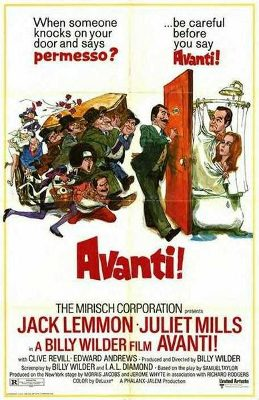
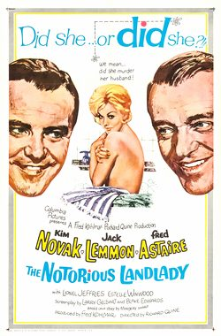
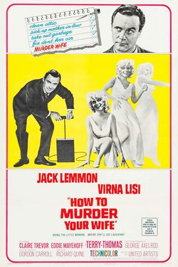
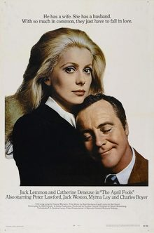

THE STANFORD THEATRE
Now Showing
·
Upcoming
·
Past
·
Search
June 29 - July 20, 2001
Jack Lemmon Film Festival
10 bills
June 29
Some Like It Hot (1959)
120 min
It Should Happen to You (1954)
86 min
June 30 July 1
Some Like It Hot (1959)
120 min
It Should Happen to You (1954)
86 min
July 2 - 5
Some Like It Hot (1959)
120 min
It Should Happen to You (1954)
86 min
July 6
The Apartment (1960)
125 min

Avanti! (1972)
140 min
July 7, 8
The Apartment (1960)
125 min
Avanti! (1972)
140 min
July 9, 10
The Apartment (1960)
125 min
Avanti! (1972)
140 min
July 11, 13
Days of Wine and Roses (1962)
117 min

The Notorious Landlady (1962)
123 min
July 14, 15
Mr. Roberts (1955)

How to Murder Your Wife (1965)
118 min
July 16, 17
Mr. Roberts (1955)
How to Murder Your Wife (1965)
118 min
July 18 - 20
The Odd Couple (1968)
101 min

The April Fools (1969)
95 min
Archived
•
StanfordTheatre.org Original